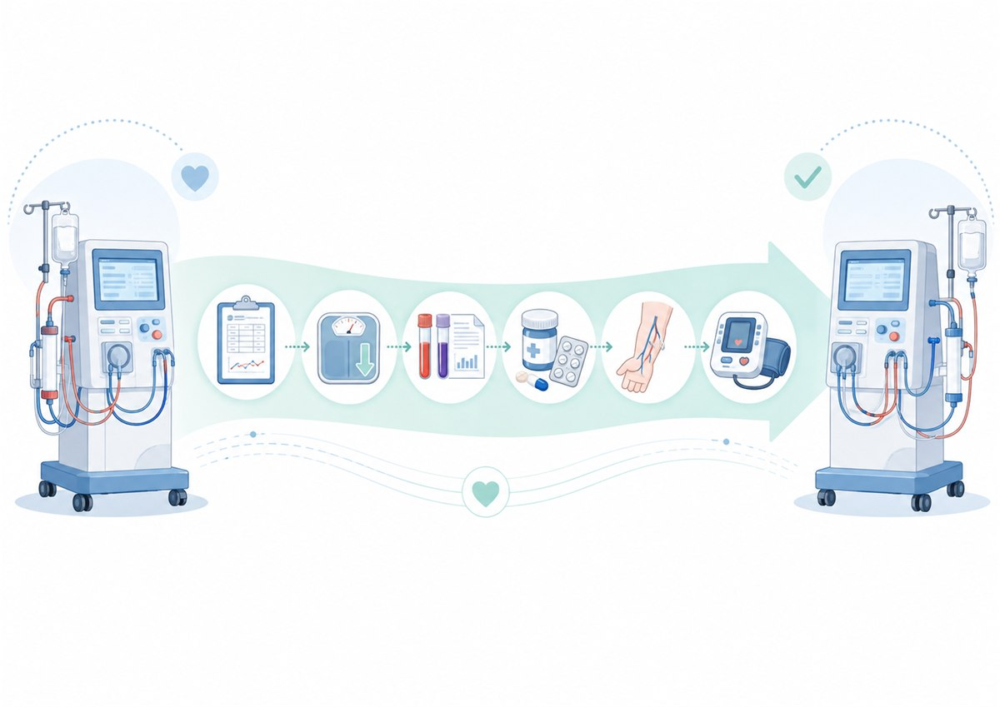

이 글의 핵심
- 혈액투석은 환자마다 투석 처방, 건체중, 혈관접근로, 약물, 검사결과가 하나로 연결된 치료입니다. 병원을 옮길 때는 이 정보가 새 의료진에게 잘 전달되는 것이 중요합니다.
- 투석 처방·투석기록, 최근 혈액검사, 감염 검사(B·C형간염), 혈관접근로 이력, 복용약 처방전을 준비하면 도움이 됩니다.
- 전원이 정해졌다면 먼저 새 투석기관에 연락해 필요한 자료·검사 항목을 확인하고, 투석 일정이 끊기지 않도록 조정하는 것이 좋습니다.
안녕하세요. 정을식내과의원입니다. 혈액투석을 받다 보면 여러 이유로 투석병원을 옮겨야 할 때가 있습니다.
이사를 하기도 하고, 직장 때문에 생활권이 달라지기도 합니다. 보호자와 가까운 곳으로 거주지를 옮기거나 투석시간을 조정해야 하는 경우도 있습니다. 인천에서 투석을 받는 분들도 병원을 옮기기 전 이런 질문을 많이 하십니다.
“그냥 새 병원에 가서 지금까지 투석받았다고 말씀드리면 되는 건가요?”
혈액투석은 단순히 '일주일에 세 번 기계로 피를 거르는 치료'가 아닙니다. 한 환자에게 맞춰져 있는 투석 처방, 건체중, 혈관접근로 상태, 약물, 빈혈 치료, 최근 검사결과 등이 하나의 치료 정보로 연결되어 있습니다. 따라서 투석병원을 옮길 때는 이 정보가 새 의료진에게 제대로 전달되는 것이 중요합니다.
가장 중요한 것은 '지금 어떻게 투석하고 있는가'입니다
같은 혈액투석이라도 모든 환자가 똑같이 치료받는 것은 아닙니다. 한 번에 몇 시간을 투석하는지, 혈류속도는 어느 정도인지, 어떤 투석막을 사용하는지, 투석액의 전해질 조성은 어떻게 되어 있는지 등이 환자마다 다를 수 있습니다. 따라서 가능하다면 기존 투석기관에서 최근 투석 처방과 투석기록을 받아오는 것이 좋습니다. 예를 들면 다음과 같은 정보입니다.
- 주당 투석 횟수와 투석시간
- 혈류속도와 투석액 유량
- 투석막 종류
- 투석 전후 체중과 혈압
- 목표로 하는 건체중
- 최근 투석 중 특별한 증상이나 문제가 있었는지
- 투석 중 사용하는 약물
새 의료진에게는 이런 기록이 환자의 현재 상태를 이해하는 중요한 출발점이 됩니다.
건체중 숫자는 중요하지만, 그대로 복사하는 숫자는 아닙니다
환자분들이 가장 잘 기억하는 투석 정보 중 하나가 건체중입니다.
“제 건체중은 62kg입니다.”
라고 정확히 말씀하시는 분들이 많습니다. 건체중은 쉽게 말하면 몸에 불필요한 수분이 많이 남아 있지도 않고, 반대로 지나치게 수분을 제거하지도 않은 적절한 체중을 추정한 값입니다. 그래서 전원할 때 기존 건체중은 매우 중요한 참고자료입니다.
하지만 새 병원에서도 반드시 그 숫자를 그대로 유지해야 한다는 뜻은 아닙니다. 시간이 지나면서 실제 체중이 변할 수 있고, 식사량이나 근육량이 달라질 수도 있습니다. 심장기능이나 혈압, 부종 상태가 달라졌을 수도 있습니다. 실제 진료에서는 건체중 숫자 하나만 보는 것이 아니라 투석 전후 혈압, 부종, 호흡곤란, 투석 중 혈압 변화, 체중 변화와 환자의 증상을 함께 봅니다. 필요한 경우 흉부 X선, 심장 상태나 체성분검사 같은 정보를 참고하기도 합니다. 따라서 기존 건체중은 새로운 평가를 시작하기 위한 중요한 기준점이라고 생각하면 이해하기 쉽습니다.
최근 혈액검사 결과도 가져오는 것이 좋습니다
혈액투석 환자의 혈액검사는 단순히 신장기능만 확인하기 위해 시행하는 것이 아닙니다. 의료진은 검사결과를 통해 여러 부분을 함께 평가합니다. 헤모글로빈과 철분 상태를 보고 빈혈 치료를 조정하고, 칼슘·인·부갑상선호르몬 등을 통해 CKD-MBD 관리 상태를 확인합니다. 칼륨과 중탄산염 같은 수치는 전해질과 산-염기 상태를 이해하는 데 도움이 됩니다. 알부민은 영양상태와 염증 등을 해석할 때 참고할 수 있습니다.
최근 검사결과가 있다면 새로운 병원에서 처음부터 모든 정보를 다시 추정하는 것보다 환자의 이전 상태와 변화 추세를 파악하기가 훨씬 수월합니다. 가능하다면 최근 한 번의 검사결과뿐 아니라 몇 개월간의 변화가 보이는 자료가 더욱 도움이 될 수 있습니다.
B형간염·C형간염 같은 감염 관련 검사도 필요할 수 있습니다
인공신장실은 여러 환자가 같은 공간에서 정기적으로 혈액투석을 받는 곳입니다. 따라서 감염관리도 중요한 부분입니다. 전원 과정에서는 보통 B형간염 항원과 항체, C형간염 등 감염 관련 검사결과를 확인하게 됩니다. 기관에 따라 필요한 검사의 종류와 인정하는 검사 시점이 다를 수 있으므로 옮기려는 기관에 미리 필요한 검사 항목을 확인하는 것이 가장 정확합니다. 검사가 너무 오래되었다면 새로 시행해야 할 수도 있습니다.
혈관접근로 정보도 꼭 전달해야 합니다
혈액투석에서 혈관접근로는 환자의 중요한 치료 기반입니다. 자가동정맥루(AVF)인지, 인조혈관(AVG)인지, 혹은 중심정맥도관을 사용하고 있는지부터 확인해야 합니다. 하지만 이것만으로는 충분하지 않을 때가 있습니다. 과거에 혈관성형술을 여러 번 받았거나 혈전제거술을 받은 적이 있다면 그 기록도 중요합니다. 천자하기 어려운 부위가 있거나 특정 구간을 피해서 천자해왔다면 이러한 정보 역시 새 투석실에 전달하는 것이 좋습니다.
“오른팔에 동정맥루가 있습니다.”
환자 입장에서는 이 정보만 기억하기 쉽지만, 의료진 입장에서는 그 혈관이 지금까지 어떻게 사용되어 왔는지가 중요한 정보가 됩니다.
복용약은 약 이름만 적어오는 것보다 정확한 처방전이 좋습니다
투석 환자는 복용하는 약이 많은 경우가 흔합니다. 혈압약뿐 아니라 인결합제, 비타민D 관련 약제, 위장약, 당뇨약, 항혈소판제 등 여러 약을 함께 복용할 수 있습니다. 여기에 투석실에서 투여하는 조혈제나 철분주사처럼 환자가 집에서 직접 복용하지 않는 약도 있습니다.
“하얀 혈압약 하나 먹어요.”
보다는 최근 처방전이나 약 봉투를 가져오는 것이 훨씬 정확합니다. 특히 다른 병원에서 처방받는 약이 있다면 함께 알려주는 것이 좋습니다.
투석 중 반복해서 생겼던 문제도 중요한 의료정보입니다
검사결과지에는 잘 나타나지 않지만 실제로는 매우 중요한 정보가 있습니다. 예를 들어 다음과 같은 경험입니다.
“투석 후반만 되면 다리에 쥐가 납니다.”
“혈압이 자주 떨어집니다.”
“투석 시작하고 한두 시간 지나면 두통이 생깁니다.”
“투석이 끝나면 집에서 몇 시간은 누워 있어야 합니다.”
이런 정보는 단순한 불편사항이 아닙니다. 수분 제거 속도와 건체중이 적절한지, 혈압약 복용시간을 조정할 필요가 있는지, 투석 처방을 다시 살펴볼 필요가 있는지 판단하는 단서가 될 수 있습니다. 따라서 전원할 때는 검사수치뿐 아니라 이전 투석에서 반복적으로 경험했던 증상도 알려주는 것이 좋습니다.
가능하다면 전원 전에 미리 연락하는 것이 좋습니다
혈액투석은 당일 방문해서 바로 시작하기 어려운 경우가 있습니다. 투석 일정과 자리를 확인해야 하고, 환자의 현재 처방과 감염 관련 검사, 혈관접근로 상태 등을 미리 검토해야 할 수 있기 때문입니다. 특히 이사 날짜가 정해져 있다면 기존 병원에서 마지막 투석을 언제 받고 새로운 병원에서 첫 투석을 언제 받을지 연결해야 합니다. 투석 간격이 지나치게 길어지면 그 사이 수분과 칼륨 등이 축적될 수 있으므로 투석 일정이 끊기지 않도록 조정하는 것이 중요합니다.
전원 전에 챙겨보면 좋은 자료
- 최근 투석 처방 및 투석기록
- 현재 건체중과 최근 체중 변화
- 최근 혈액검사 결과
- B형간염·C형간염 등 감염 관련 검사
- 현재 복용약 처방전
- 투석실에서 투여 중인 주사제 정보
- 혈관접근로 종류와 시술·수술 기록
- 주요 질환과 입원·수술력
- 투석 중 반복되는 증상이나 특이사항
모든 자료를 환자가 직접 완벽하게 준비해야 한다는 뜻은 아닙니다. 실제 전원 과정에서는 기존 의료기관과 새로운 의료기관 사이에 필요한 의료정보를 전달하기도 합니다. 다만 환자와 보호자도 어떤 정보가 중요한지를 알고 있으면 전원 과정에서 빠진 것이 없는지 확인하는 데 도움이 됩니다.
투석병원을 옮긴다는 것은 치료의 연속성을 옮기는 과정입니다
혈액투석은 오랜 기간 반복해서 받는 치료입니다. 그 과정에서 쌓인 건체중의 변화, 혈압의 패턴, 혈관접근로의 역사, 투석 중 나타났던 증상과 약물 조정 기록은 모두 환자에게 맞춰진 치료의 일부입니다. 그래서 병원을 옮길 때 가장 중요한 것은 새로운 곳에서 모든 것을 처음부터 다시 시작하는 것이 아니라 지금까지 축적된 치료정보가 끊기지 않고 이어지도록 하는 것입니다.
인천에서 투석기관을 옮겨야 하는 상황뿐 아니라 다른 지역으로 이사하거나 여행투석을 준비할 때도 같은 원칙이 적용됩니다. 전원이 예정되어 있다면 먼저 새로운 투석기관에 연락해 필요한 자료와 검사 항목을 확인하고, 기존 의료진에게 전원에 필요한 기록을 요청해두는 것이 좋겠습니다.
본 칼럼은 일반적인 의학 정보 제공을 위한 것으로, 개별 환자의 진단·처방을 대신하지 않습니다. 전원과 투석 처방, 필요한 검사 항목은 반드시 담당 의료진 및 옮기려는 투석기관과 상의하세요. — 정을식내과의원 신장내과